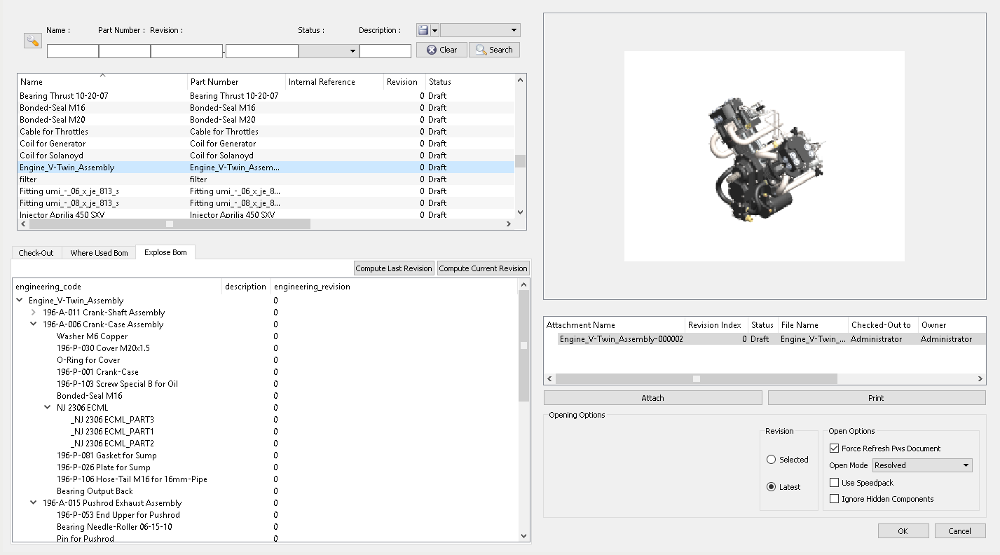

This application enables a group of people to intelligently and efficiently manage 3D Models and 2D Drawings, directly from CAD editors. Helps to share 2D documents using PDF embedded. Puts your engineering decisions, models and drawings into Odoo.
It helps to work on Concurrent Engineering managing access policies on documents. Moreover, it adds many reports and views on Bill of Materials or related to them.
Allows you to search product inside the Cad application, giving you a powerfull searching tool.

Manages fundamental revisions of Products and Documents.
Integrates CAD Packages into Odoo extending product revision and B.O.M. capability.
Allows to manage LifeCycle of Products and Documents, integrating it with standard Workflow tools.
Helps to describe history of changes maintaining BoM through revisions.


Implements several special BoM reports.
BoMs can be printed with different styles: One Level, All Levels, Only Leaves.
Comparing BoMs helps to understand differences between them.